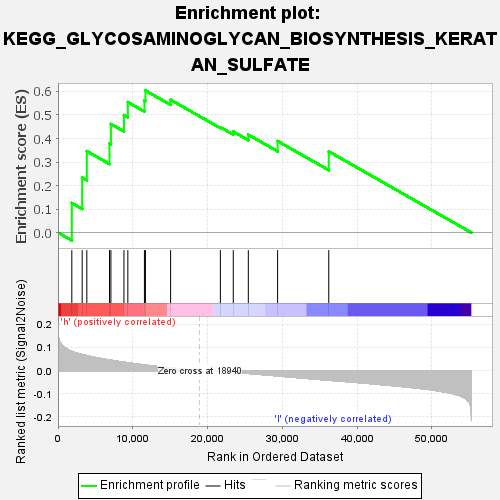

| | | Dataset | VCAN.VCAN.cls#h_versus_l.VCAN.cls#h_versus_l_repos |
| Phenotype | VCAN.cls#h_versus_l_repos |
| Upregulated in class | h |
| GeneSet | KEGG_GLYCOSAMINOGLYCAN_BIOSYNTHESIS_KERATAN_SULFATE |
| Enrichment Score (ES) | 0.603916 |
| Normalized Enrichment Score (NES) | 1.6214552 |
| Nominal p-value | 0.020872865 |
| FDR q-value | 1.0 |
| FWER p-Value | 0.597 |
Table: GSEA Results Summary

Fig 1: Enrichment plot: KEGG_GLYCOSAMINOGLYCAN_BIOSYNTHESIS_KERATAN_SULFATE
Profile of the Running ES Score & Positions of GeneSet Members on the Rank Ordered List
Fig 2: KEGG_GLYCOSAMINOGLYCAN_BIOSYNTHESIS_KERATAN_SULFATE
Blue-Pink O' Gram in the Space of the Analyzed GeneSet
Fig 3: KEGG_GLYCOSAMINOGLYCAN_BIOSYNTHESIS_KERATAN_SULFATE: Random ES distribution
Gene set null distribution of ES for KEGG_GLYCOSAMINOGLYCAN_BIOSYNTHESIS_KERATAN_SULFATE